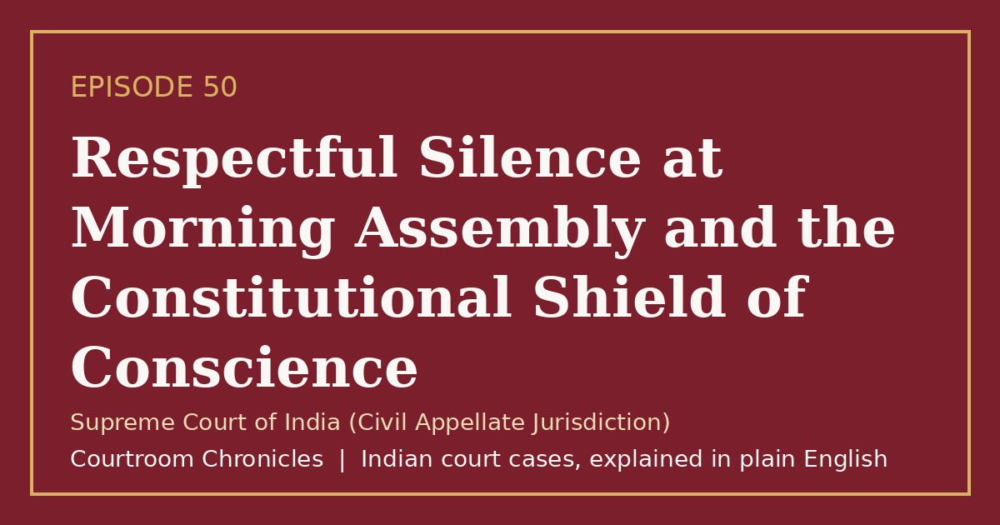

Episode 50
Respectful Silence at Morning Assembly and the Constitutional Shield of Conscience
A landmark constitutional judgment protected three expelled schoolchildren, holding that respectful silence during the national anthem violates no law.
Constitutional lawFundamental rightsNatural justice
#CourtroomChronicles#IndianLaw#FreedomOfConscience#FreeSpeech#ConstitutionalLaw#FundamentalRights#SupremeCourtOfIndia

Listen
- Court
- Supreme Court of India (Civil Appellate Jurisdiction)
- Date of Decision
- August 11, 1986
- Conduct in Question
- Three siblings standing respectfully in silence during the morning school assembly without singing the national anthem
- Administrative Action
- Expulsion from a government-aided high school under departmental circulars
- Inquiry Finding
- Official education inquiry confirmed the children were well-behaved, law-abiding, and showed no disrespect
Key takeaways
- Standing respectfully in silence during the national anthem fulfills civic respect and violates no Indian law.
- Executive circulars without statutory backing cannot be used to curtail fundamental rights of speech or religion.
- Freedom of speech encompasses the right not to be compelled to utter words against one's sincere conscience.
The case in brief
Three young siblings attending a government-aided school in southern India always stood upright in respectful silence during the morning assembly when the national anthem was played, refraining from singing because their religious faith forbade vocalizing praise to any entity other than their deity. Although an official education inquiry found that the students were exemplary and showed zero disrespect, political controversy prompted school authorities to expel them under departmental circulars.
After both a single judge and a division bench of the state High Court rejected their challenge, the children appealed to the Supreme Court. The state authorities relied on departmental instructions from the education directorate and contended that compelling participation in singing the national anthem was essential to foster patriotism and school discipline.
The Supreme Court set aside the High Court rulings and ordered the immediate readmission of the three students. The bench held that no statutory provision obliges any citizen to sing the national anthem, that standing respectfully in silence neither prevents singing nor causes disturbance under national honour statutes, and that mere departmental circulars lack the force of law required to curtail fundamental freedoms of speech and conscience.
Timeline
- School Expulsion
Three siblings are expelled from school under administrative directives for standing silently during the national anthem.
- High Court Dismissal
A division bench of the state High Court upholds the expulsion, rejecting the pupils' constitutional challenge.
- Supreme Court Reversal
The Supreme Court strikes down the expulsion and affirms freedom of conscience and the right to remain silent.
What the court decided
Appeal allowed; High Court judgments set aside and school authorities directed to readmit the three students and allow them to pursue their studies without hindrance.
Key holdings
- There is no legal provision in India obliging anyone to sing the national anthem; proper respect is shown by standing up respectfully when it is sung.
- Standing in respectful silence without singing does not prevent the anthem from being sung or cause disturbance under Section 3 of the Prevention of Insults to National Honour Act, 1971.
- Fundamental rights under Articles 19(1)(a) and 25(1) can only be restricted by a valid statute enacted by the legislature, never by mere executive or departmental circulars.
- Courts must examine whether a religious belief is genuinely and conscientiously held rather than judging whether the belief appeals to personal reason or sentiment.
Legal principles
Freedom of Silence Within Free Expression
The constitutional guarantee of freedom of speech and expression inherently includes the right to remain silent and refrain from compelled speech.
In this case: The court held that forcing students to sing against their genuine conscientious objection violated Article 19(1)(a).
Statutory Force Requirement for Restrictions
Fundamental freedoms may only be regulated by duly enacted laws with statutory authority, not by informal administrative instructions or departmental circulars.
In this case: The bench invalidated the reliance on education department circulars because they lacked statutory backing and fell outside constitutional restriction grounds.
Constitutional Protection of Minority Conscience
The true test of a democracy is whether even a small minority can find protection for its sincerely held beliefs under the Constitution.
In this case: The court emphasized that constitutional tolerance requires protecting peaceful, respectful religious dissent rather than enforcing uniform rituals.
The law then and now
The appeal was decided under Articles 19(1)(a), 25(1), and 51A(a) of the Constitution of India alongside Section 3 of the Prevention of Insults to National Honour Act, 1971, all of which remain in force.
Left: the law applied to this case. Right: the matching provision today (the new criminal codes apply only to offences on or after 1 July 2024).
- —
Unchanged. See all 2 episodes on this provision →
- Constitution of IndiaArticle 25(1)Freedom of conscience and free profession, practice and propagation of religion—
Unchanged.
- —
Unchanged.
Sources
- Judgment of the Supreme Court of India, August 11, 1986
- Constitution of India (Official Legislative Department Text)
- Prevention of Insults to National Honour Act, 1971 (Section 3)